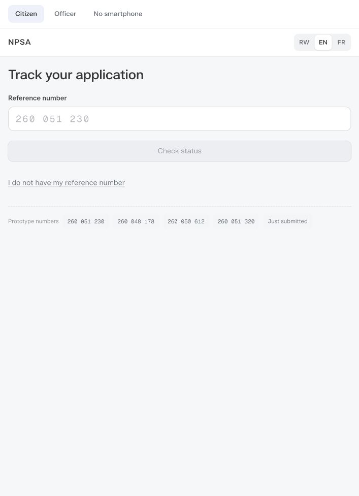
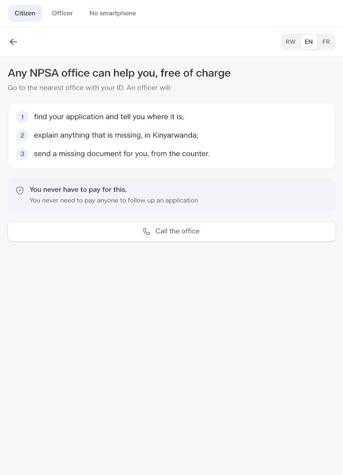
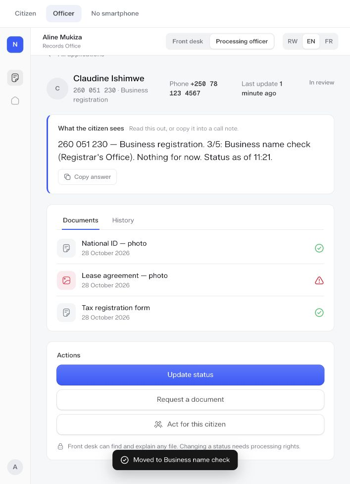
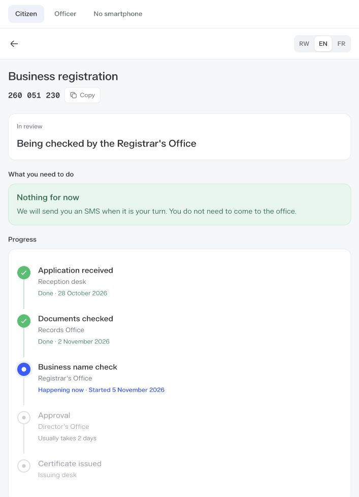
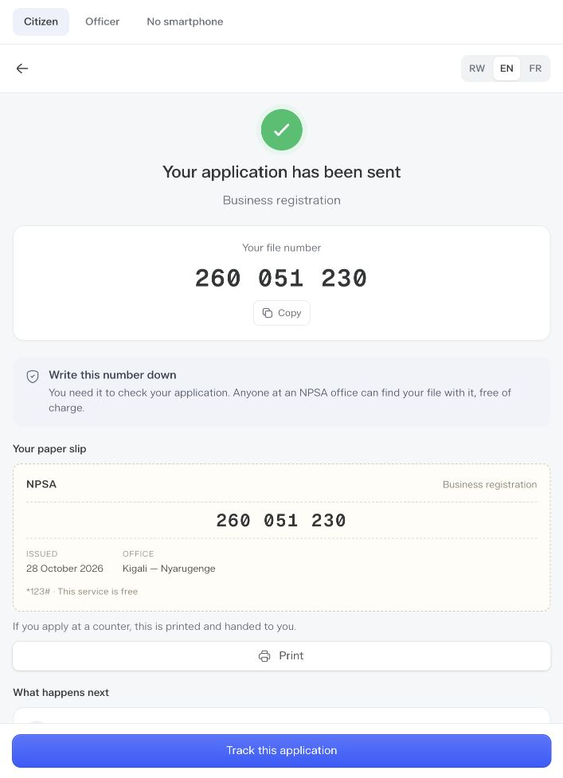

5 November 2026. The development app changed during inspection; shared-state verification was repeated on the production preview at port 5174. TypeScript and production build passed. No source changes were made.
Source inspection also confirms new rejection-reason selection and an automatic-resume effect. Automatic upload resumption was not re-exercised in the browser during this focused review. Upload state remains component-local, modal focus containment remains absent, and front-desk response decisions remain available. Live carriers, real uploads, full accessibility, and translation accuracy are outside this verification.
Grouped numeric reference and a simpler entry screen. The example is now only a placeholder; a persistent instruction about where to find the number would help.

The link opens assistance. It leads primarily to an office visit; lead with the phone alternative if remote recovery is possible.

The saved stage and displayed answer update. However, the application advances despite its rejected lease; the stage action clears the request without resolving the document.

Production-preview check confirms the citizen sees the officer change. Registrar's Office appears as current, while the handling card still identifies Records Office/Aline. Keep the two aligned or label the latter as a support contact.

The prominent grouped reference, paper slip, copy action and next steps strengthen the handoff. Print output and real notification delivery were not tested.
